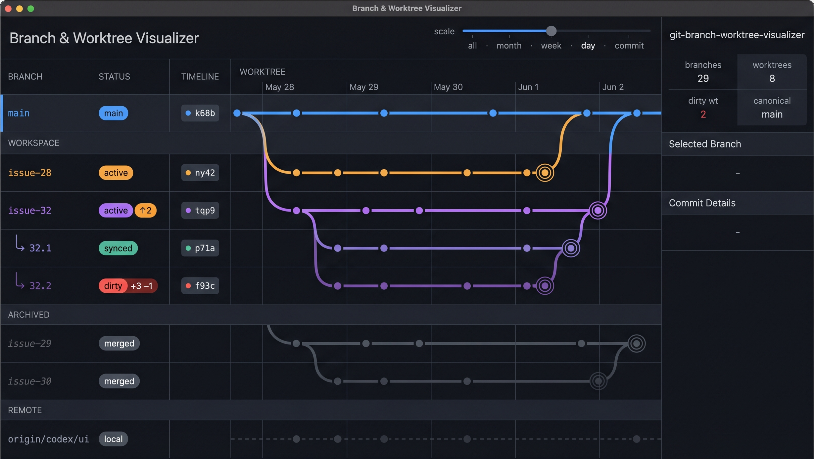

Partners, McKinsey
Rana has “top notch ownership and commitment,” can “lead the process to get to the outcomes,” and takes initiative on how work will be handed over so it becomes useful beyond the project.
Economist by training, advisor and investor by trade, builder by instinct.
I do my best work when things are messy and the stakes are high. I spent two years trading post-pandemic markets at a hedge fund, then consulting taught me how to influence people. I move between the big picture and the detail, and am comfortable using first-principles over a playbook. Outside work, you'll find me at a rave, off travelling somewhere new, or out biking on the trails.
Scroll for the work universe
01 / 05Partners, McKinsey
Rana has “top notch ownership and commitment,” can “lead the process to get to the outcomes,” and takes initiative on how work will be handed over so it becomes useful beyond the project.
Partner, McKinsey
Rana is an “excellent digital translator” across process and technical flows, and has been the “go-to person” for understanding complex emerging topics.
Engagement Manager, McKinsey
On a hard, high-intensity study, feedback was: “If I had staffed any other McKinsey associate, we would not have been successful.” Rana “delivers quality output” under pressure.
Associate Partner, McKinsey
Rana is “very credible and fearless with clients,” “convincing and assertive,” and can “synthesise insights impressively well” in a short timeframe.
Partners, McKinsey
“Rana’s towering strength is problem solving, especially on conceptual topics.” She is “analytically very very very strong” and can “issue tree very clearly.”
Employers
Sep 2022 - Present
Business Analyst → Senior Associate Strategy, Transformation & Build
Sep 2020 - Jul 2022
Economic Analyst → Multi-Asset Analyst Alternative Investment
Education
2017 - 2020
BSc Econometrics & Mathematical Economics (EME) First-Class Honours Premchand Prize: highest mark in senior-year Monetary Economics Top 5% in Quantitative Finance and Maths
2016 - 2017
A-Levels A*A*A*: Mathematics, Further Mathematics, Biology Completed the two-year course in 9 months A-Level Student of the Year
McKinsey
McKinsey
McKinsey
SPX Capital
Newspeak House / ACX
Manifest / LessOnline
Independent · 2021–2022
WIP · agent-orchestration tool
Reimagining Git's branch/merge model into a way to lead a team of AI agents - the way a consultant runs parallel workstreams. Git is great for backup and revert when an agent goes wrong, but it isn't built for leading a team.
The vision: see swim lanes of workstreams moving forward, branching, merging, with dependencies - run agents in parallel at scale and know where work depends and converges. Take Git data, show it differently, with extra signals layered on top.
